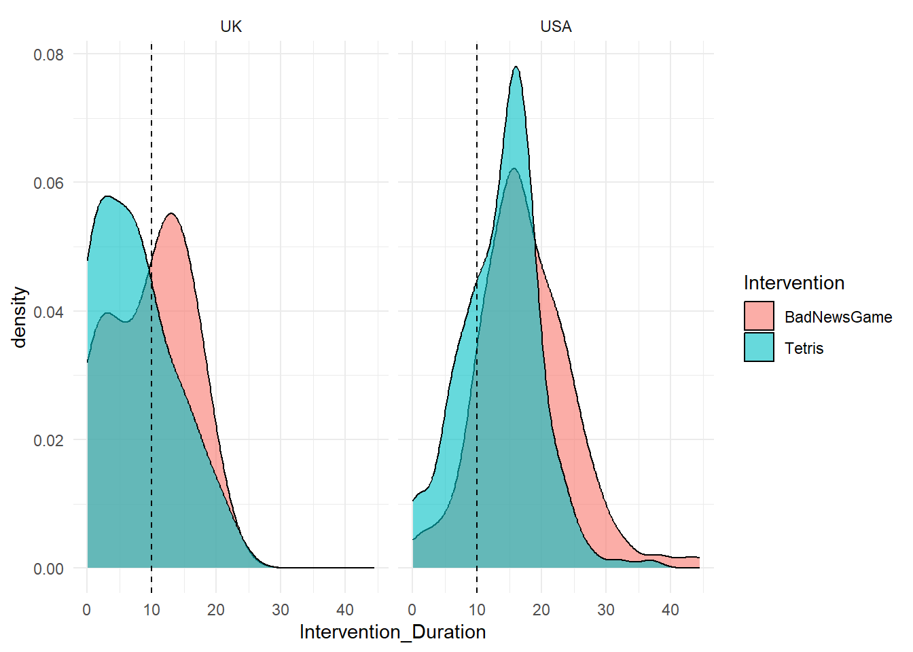
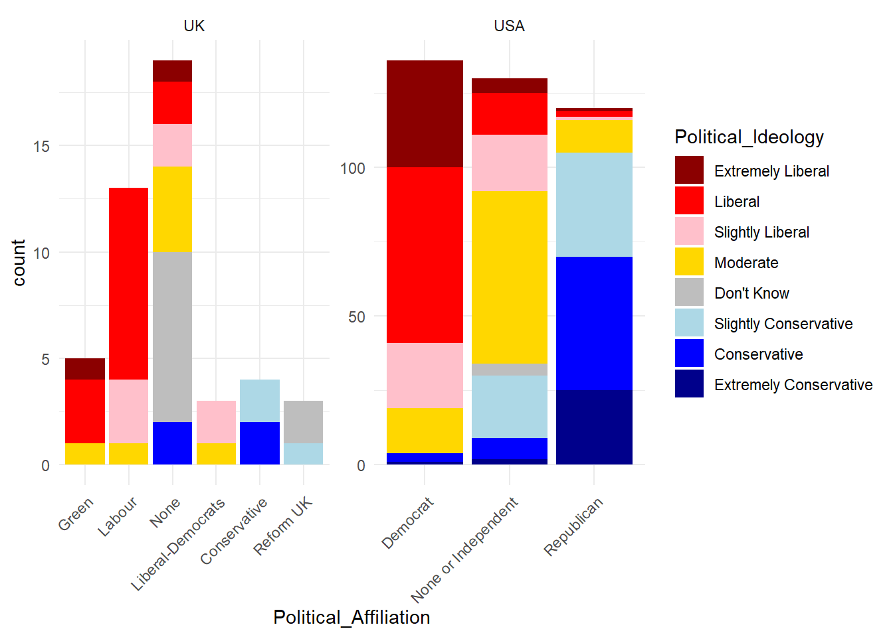
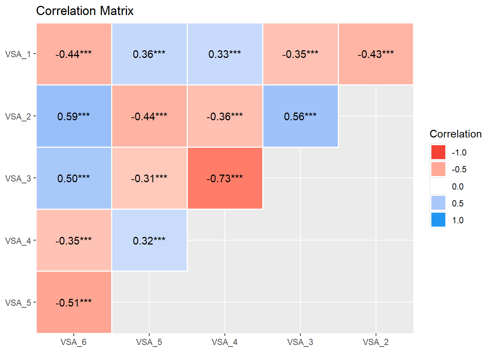
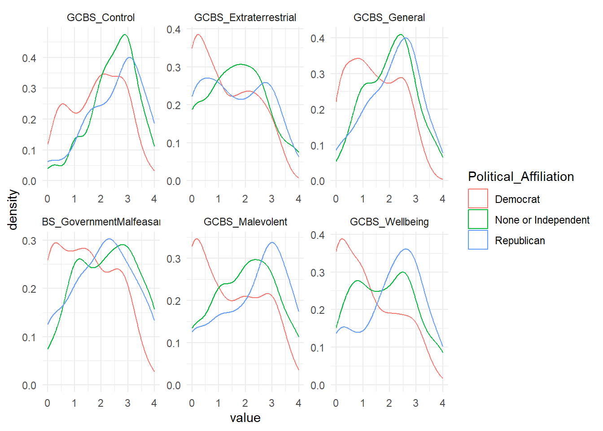
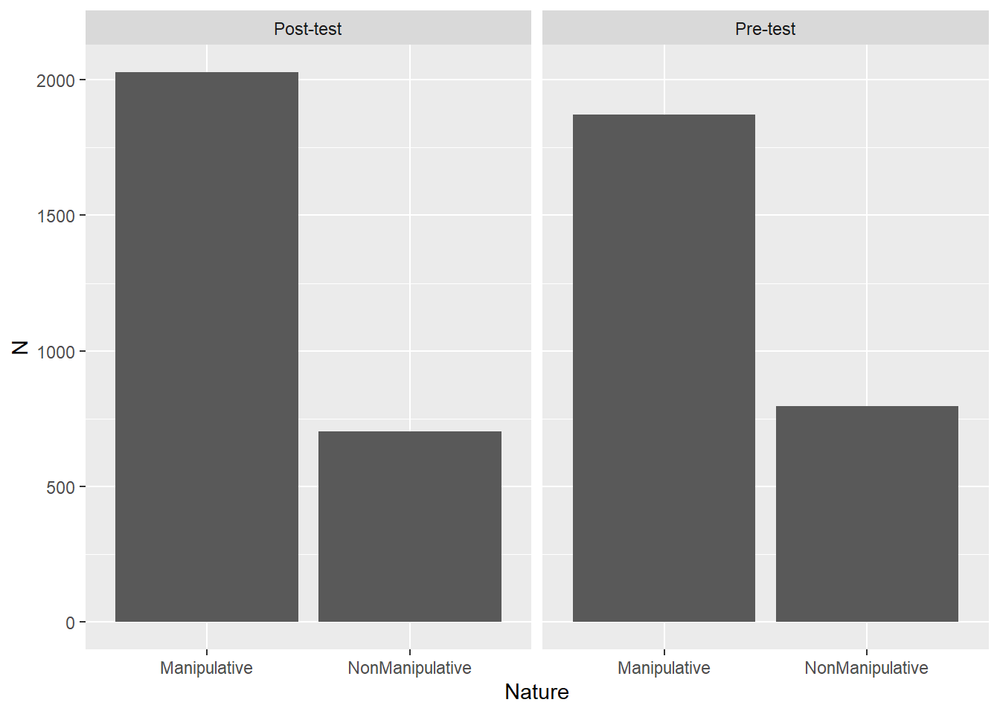
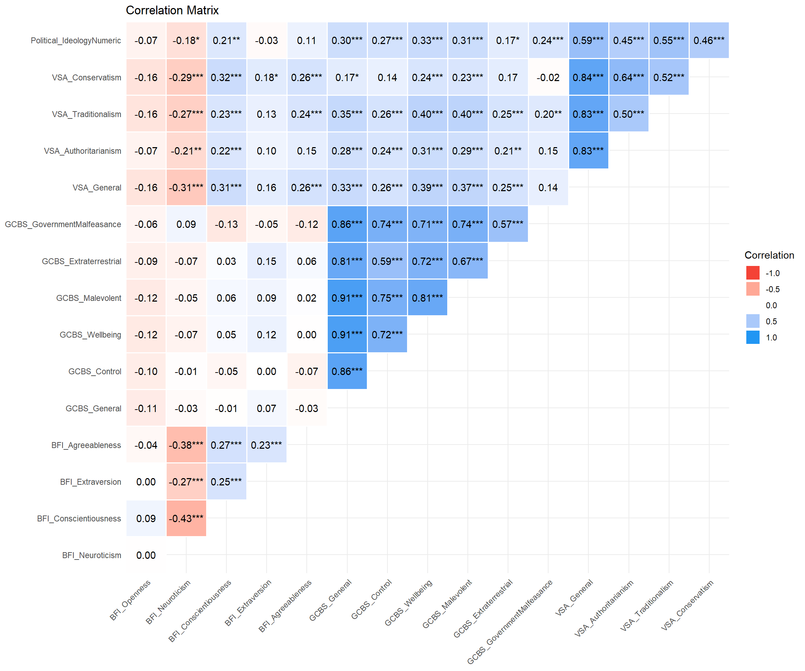

Code
library(tidyverse)
library(easystats)
library(patchwork)
library(ggside)
library(modelsummary)library(tidyverse)
library(easystats)
library(patchwork)
library(ggside)
library(modelsummary)df <- read.csv("../data/rawdata_participants.csv") |>
mutate(Political_Affiliation = fct_relevel(Political_Affiliation, "Green", "Labour", "Democrat", "None", "None or Independent", "Liberal-Democrats", "Conservative", "Republican"),
Political_Ideology = fct_relevel(Political_Ideology, "Extremely Liberal", "Liberal", "Slightly Liberal", "Moderate", "Don't Know", "Slightly Conservative", "Conservative", "Extremely Conservative"))
dfmist <- read.csv("../data/rawdata_mist.csv")
colors_party <- c("Democrat" = "blue", "Republican" = "red", "Labour" = "red", "Conservative" = "blue", "Green" = "green", "None or Independent" = "grey")The initial sample consisted of 421 participants (Mean age = 43.2, SD = 16.4, range: [17, 83], 0.5% missing; Gender: 52.0% women, 45.8% men, 2.14% non-binary; Education: Bachelor, 34.68%; Doctorate, 4.04%; High School, 38.24%; Master, 17.10%; Other, 5.94%)`.
outliers <- list()df |>
ggplot(aes(x=Intervention_Duration, fill=Intervention)) +
geom_density(alpha=0.6) +
geom_vline(xintercept = 12, linetype="dashed") +
theme_minimal()
t.test(Intervention_Duration ~ Intervention, data=df) |>
report::report(data=df)Effect sizes were labelled following Cohen's (1988) recommendations.
The Welch Two Sample t-test testing the difference of Intervention_Duration by
Intervention (mean in group BadNewsGame = 17.01, mean in group Tetris = 13.55)
suggests that the effect is positive, statistically significant, and medium
(difference = 3.47, 95% CI [2.18, 4.75], t(414.09) = 5.31, p < .001; Cohen's d
= 0.52, 95% CI [0.32, 0.71])outliers$Intervention_Duration <- df$Participant[df$Intervention_Duration < 12]We removed 127 (insight::format_percent(length(outliers$Intervention_Duration) / nrow(df))) participants with Intervention Duration < 12 minutes.
df |>
mutate(Total_Duration = Experiment_Duration - Intervention_Duration) |>
filter(Experiment_Duration < 120) |>
ggplot(aes(x=Total_Duration, fill=Intervention)) +
geom_density(alpha=0.6) +
geom_vline(xintercept = 10, linetype="dashed") +
theme_minimal()
outliers$Experiment_Duration <- df$Participant[(df$Experiment_Duration - df$Intervention_Duration) < 10]
outliers$Experiment_Duration <- outliers$Experiment_Duration[!outliers$Experiment_Duration %in% outliers$Intervention_Duration]We additionally removed 7 (insight::format_percent(length(outliers$Experiment_Duration) / nrow(df))) participants with Intervention Duration < 20 minutes.
df <- df[!df$Participant %in% c(outliers$Intervention_Duration, outliers$Experiment_Duration), ]
dfmist <- dfmist[!dfmist$Participant %in% c(outliers$Intervention_Duration, outliers$Experiment_Duration), ]df |>
ggplot(aes(x=Political_Affiliation, fill=Political_Ideology)) +
geom_bar() +
theme_minimal() +
# theme(legend.position = "none") +
scale_fill_manual(values = c("Extremely Liberal" = "darkred", "Liberal" = "red", "Slightly Liberal" = "pink", "Moderate" = "gold", "Don't Know"="grey", "Slightly Conservative" = "lightblue", "Conservative" = "blue", "Extremely Conservative" = "darkblue")) +
facet_wrap(~Sample, scales="free")
df$Political_IdeologyNumeric <- as.numeric(factor(ifelse(df$Political_Ideology == "Don't Know", NA, df$Political_Ideology)))
df |>
filter(!is.na(Political_IdeologyNumeric), Sample == "USA") |>
ggplot(aes(x=Political_IdeologyNumeric, fill=Political_Affiliation)) +
geom_histogram() +
theme_minimal() +
scale_fill_manual(values = colors_party) `stat_bin()` using `bins = 30`. Pick better value with `binwidth`.Total Right-Wing Authoritarianism score: the sum of all items divided by 6. Note:Item 1 and 2 measure Conservatism or Authoritarian Submission. Items 3 and 4 measure Traditionalism or Conventionalism. Items 5 and 6 measure Authoritarianism or Authoritarian Aggression.
plot(summary(correlation(select(df, starts_with("VSA_"), -VSA_Duration))))
df$VSA_Conservatism <- (datawizard::reverse_scale(df$VSA_1, range = c(0, 8)) + df$VSA_2) / 2
df$VSA_Traditionalism <- (df$VSA_3 + datawizard::reverse_scale(df$VSA_4, range = c(0, 8))) / 2
df$VSA_Authoritarianism <- (datawizard::reverse_scale(df$VSA_5, range = c(0, 8)) + df$VSA_6) / 2
df$VSA_General <- rowMeans(df[, c("VSA_Conservatism", "VSA_Traditionalism", "VSA_Authoritarianism")], na.rm = TRUE)
# Remove items that starts with VSA and end with digits
df <- df[!grepl("VSA_*.[0-9]$", names(df))]
df$VSA_Duration <- NULL
p1 <- df |>
filter(Sample == "USA") |>
pivot_longer(starts_with("VSA_")) |>
ggplot(aes(x=value, colour=name)) +
geom_density() +
theme_minimal() +
facet_wrap(~Political_Affiliation, ncol=1, scales="free")
# TODO: do the same for UK
p1
df$BFI_Agreeableness <- (df$BFI10_2 + (6-df$BFI10_7)) / 2
df$BFI_Extraversion <- (df$BFI10_6 + (6-df$BFI10_1)) / 2
df$BFI_Conscientiousness <- (df$BFI10_8 + (6-df$BFI10_3)) / 2
df$BFI_Neuroticism <- (df$BFI10_9 + (6-df$BFI10_4)) / 2
df$BFI_Openness <- (df$BFI10_10 + (6-df$BFI10_5)) / 2
# Remove items that starts with BFI and end with digits
df <- df[!grepl("BFI.*[0-9]", names(df))]
df$BFI_Duration <- NULLp1 <- df |>
filter(Sample == "USA") |>
pivot_longer(starts_with("BFI_")) |>
ggplot(aes(x=value, colour=Political_Affiliation)) +
geom_density() +
theme_minimal() +
facet_wrap(~name, scales="free")
p1
df$GCBS_GovernmentMalfeasance <- (df$GCBS15_1 + df$GCBS15_6 + df$GCBS15_11) / 3
df$GCBS_Extraterrestrial <- (df$GCBS15_3 + df$GCBS15_8 + df$GCBS15_13) / 3
df$GCBS_Malevolent <- (df$GCBS15_2 + df$GCBS15_7 + df$GCBS15_12) / 3
df$GCBS_Wellbeing <- (df$GCBS15_4 + df$GCBS15_9 + df$GCBS15_14) / 3
df$GCBS_Control <- (df$GCBS15_5 + df$GCBS15_10 + df$GCBS15_15) / 3
# Remove items that starts with BFI and end with digits
df <- df[!grepl("GCBS15.*[0-9]", names(df))]
df$GCBS_Duration <- NULL
df$GCBS_General <- rowMeans(select(df, starts_with("GCBS_")), na.rm = TRUE)
plot(summary(correlation(select(df, starts_with("GCBS_")))))
p1 <- df |>
filter(Sample == "USA") |>
pivot_longer(starts_with("GCBS_")) |>
ggplot(aes(x=value, colour=Political_Affiliation)) +
geom_density() +
theme_minimal() +
facet_wrap(~name, scales="free")
p1
mocri <- df |>
select(Participant, starts_with("MOCRI_"), -ends_with("Duration")) |>
pivot_longer(-Participant) |>
separate(name, into = c("extra", "Condition", "Item", "Nature"), sep = "_") |>
select(-extra) |>
mutate(
Correct = ifelse(Nature == "Manipulative" & value == 0, 1, 0),
True_Positive = ifelse(Nature == "Manipulative" & value == 0, 1, 0),
True_Negative = ifelse(Nature == "NonManipulative" & value == 1, 1, 0),
False_Positive = ifelse(Nature == "NonManipulative" & value == 0, 1, 0),
False_Negative = ifelse(Nature == "Manipulative" & value == 1, 1, 0),
Manipulative = ifelse(value == 0, 1, 0),
Item = paste0(Condition, "_", Item),
Condition = ifelse(Condition == "POST", "Post-test", "Pre-test")
) |>
select(-value)
mocri |>
summarise(N = sum(Manipulative), .by = c("Participant", "Nature", "Condition")) |>
ggplot(aes(x=Nature, y=N)) +
geom_bar(stat="identity") +
facet_grid(~Condition) 
df <- mocri |>
summarise(
MOCRI_Correct = sum(Correct) / n(),
MOCRI_N_Manipulative = sum(True_Positive) + sum(False_Positive),
MOCRI_N_NonManipulative = sum(True_Negative) + sum(False_Negative),
MOCRI_True_Positive = sum(True_Positive),
MOCRI_True_Negative = sum(True_Negative),
MOCRI_False_Positive = sum(False_Positive),
MOCRI_False_Negative = sum(False_Negative),
.by = c("Participant", "Condition")
) |>
pivot_wider(names_from = Condition, values_from = -c(Participant, Condition)) |>
full_join(df, by = "Participant")
# Remove cols that start with MOCRI and contain a digit
df <- df[!grepl("^MOCRI.*[0-9].*", names(df))]# compute_dprime <- function(data) {
# # Calculate hit rate and false alarm rate
# H <- (data$True_Positive + 0.5) / (data$True_Positive + data$False_Negative + 1) # Adjusted Hit Rate
# FA <- (data$False_Positive + 0.5) / (data$False_Positive + data$True_Negative + 1) # Adjusted False Alarm Rate
#
# # Parametric ----
# # Compute z-scores
# zH <- qnorm(H) # z-score for hit rate
# zFA <- qnorm(FA) # z-score for false alarm rate
#
# # d' and criterion
# d_prime <- zH - zFA
# criterion <- -0.5 * (zH + zFA)
#
# # Non-parametric ----
# # A' (A-prime)
# A_prime <- ifelse(
# H > FA,
# 0.5 + ((H - FA) * (1 + H - FA)) / (4 * H * (1 - FA)),
# ifelse(
# H < FA,
# 0.5 + ((FA - H) * (1 + FA - H)) / (4 * FA * (1 - H)),
# 0.5
# )
# )
#
# # B''d
# B_double_prime <- ifelse(
# H != FA,
# ((1 - H) * (1 - FA) - H * FA) / ((1 - H) * (1 - FA) + H * FA),
# 0
# )
#
# # Combine results
# cbind(data, data.frame(
# "dprime" = d_prime,
# "criterion" = criterion,
# "aprime" = A_prime,
# "bppd" = B_double_prime
# ))
# }
# # Participant scores
# df <- mocri |>
# summarise(
# correct = sum(Correct) / n(),
# True_Positive = sum(True_Positive),
# True_Negative = sum(True_Negative),
# False_Positive = sum(False_Positive),
# False_Negative = sum(False_Negative),
# .by = c("Participant", "Type")
# ) |>
# compute_dprime() |>
# select(Participant, Type, correct, dprime, criterion, aprime, bppd) |>
# pivot_wider(names_from=c("Type"),
# values_from=c("correct", "dprime", "criterion", "aprime", "bppd"),
# names_vary = "fastest") |>
# mutate(correct_Diff = correct_Post - correct_Pre,
# dprime_Diff = dprime_Post - dprime_Pre,
# criterion_Diff = criterion_Post - criterion_Pre,
# bppd_Diff = bppd_Post - bppd_Pre) |>
# datawizard::data_addprefix("MOCRI_", select=-Participant) |>
# full_join(df, by="Participant")
#
#
# df |>
# summarise(
# dprime_Pre_avg = mean(MOCRI_dprime_Pre, na.rm = TRUE),
# dprime_Pre_min = min(MOCRI_dprime_Pre, na.rm = TRUE),
# dprime_Pre_max = max(MOCRI_dprime_Pre, na.rm = TRUE),
# dprime_Post_avg = mean(MOCRI_dprime_Post, na.rm = TRUE),
# dprime_Post_min = min(MOCRI_dprime_Post, na.rm = TRUE),
# dprime_Post_max = max(MOCRI_dprime_Post, na.rm = TRUE)
# )
#
#
# df |>
# ggplot(aes(x = MOCRI_correct_Pre, y = MOCRI_dprime_Pre, color = "Pre")) +
# geom_point() +
# geom_smooth(method = "lm", se = FALSE) +
# geom_point(aes(x = MOCRI_correct_Post, y = MOCRI_dprime_Post, color = "Post")) +
# geom_smooth(aes(x = MOCRI_correct_Post, y = MOCRI_dprime_Post, color = "Post"), method = "lm", se = FALSE) +
# labs(title = "MOCRI Correct vs. dprime", x = "Correct", y = "dprime")dfmist <- dfmist |>
full_join(df[, c("Participant", "Intervention")], by = "Participant") |>
mutate(
Correct = case_when(
Realness > 0.5 & Nature == "Real" ~ 1,
Realness < 0.5 & Nature == "Fake" ~ 1,
.default = 0
),
True_Positive = ifelse(Realness < 0.5 & Nature == "Fake", 1, 0),
True_Negative = ifelse(Realness > 0.5 & Nature == "Real", 1, 0),
False_Positive = ifelse(Realness < 0.5 & Nature == "Real", 1, 0),
False_Negative = ifelse(Realness > 0.5 & Nature == "Fake", 1, 0)
) p1 <- dfmist |>
summarise(Realness = mean(Realness),
Nature = unique(Nature),
Topic = unique(Topic),
.by=c("Item")) |>
mutate(Item = fct_reorder(Item, Realness)) |>
ggplot(aes(x=Realness, y=Item, fill=Nature)) +
geom_bar(stat="identity") +
facet_wrap(~Topic, scales="free") +
theme_minimal()
p2 <- dfmist |>
summarise(p_Correct = sum(Correct) / n(),
Nature = unique(Nature),
Topic = unique(Topic),
.by=c("Item")) |>
mutate(Item = fct_reorder(Item, p_Correct)) |>
ggplot(aes(x=p_Correct, y=Item, fill=Nature)) +
geom_bar(stat="identity") +
facet_wrap(~Topic, scales="free") +
theme_minimal()
p1 / p2
df <- dfmist |>
summarise(
MIST_Correct = sum(Correct) / n(),
MIST_N_Fake = sum(True_Positive) + sum(False_Positive),
MIST_N_Real = sum(True_Negative) + sum(False_Negative),
MIST_True_Positive = sum(True_Positive),
MIST_True_Negative = sum(True_Negative),
MIST_False_Positive = sum(False_Positive),
MIST_False_Negative = sum(False_Negative),
.by = c("Participant", "Condition")
) |>
pivot_wider(names_from = Condition, values_from = -c(Participant, Condition)) |>
full_join(df, by = "Participant")
df <- df[!grepl("MIST_.*[0-9].*", names(df))]
# Participant scores
# df <- dfmist |>
# summarise(
# correct = sum(Correct) / n(),
# True_Positive = sum(True_Positive),
# True_Negative = sum(True_Negative),
# False_Positive = sum(False_Positive),
# False_Negative = sum(False_Negative),
# .by = c("Participant", "Condition", "Topic")
# ) |>
# compute_dprime() |>
# select(Participant, Condition, Topic, correct, dprime, criterion, aprime, bppd) |>
# pivot_wider(names_from=c("Condition", "Topic"),
# values_from=c("correct", "dprime", "criterion", "aprime", "bppd"),
# names_vary = "slowest") |>
# mutate(correct_Diff_covid = correct_Posttest_covid - correct_Pretest_covid,
# correct_Diff_general = correct_Posttest_general - correct_Pretest_general,
# dprime_Diff_covid = dprime_Posttest_covid - dprime_Pretest_covid,
# dprime_Diff_general = dprime_Posttest_general - dprime_Pretest_general,
# criterion_Diff_covid = criterion_Posttest_covid - criterion_Pretest_covid,
# criterion_Diff_general = criterion_Posttest_general - criterion_Pretest_general,
# aprime_Diff_covid = aprime_Posttest_covid - aprime_Pretest_covid,
# aprime_Diff_general = aprime_Posttest_general - aprime_Pretest_general,
# bppd_Diff_covid = bppd_Posttest_covid - bppd_Pretest_covid,
# bppd_Diff_general = bppd_Posttest_general - bppd_Pretest_general) |>
# datawizard::data_addprefix("MIST_", select=-Participant) |>
# full_join(df, by="Participant")
#
# df$MIST_correct_Diff <- (df$MIST_correct_Diff_covid + df$MIST_correct_Diff_general) / 2
# df$MIST_dprime_Diff <- (df$MIST_dprime_Diff_covid + df$MIST_dprime_Diff_general) / 2ggplot(df, aes(x = Gender, fill = Gender)) +
geom_bar() +
labs(title = "Distribution of Gender", x = "Gender", y = "Count")
# Create the bar chart for Education
ggplot(df, aes(x = Education, fill = Education)) +
geom_bar() +
labs(title = "Distribution of Education Level",
x = "Education Level",
y = "Count") +
theme_minimal() # Optional: Adds a minimal theme for better aesthetics
ggplot(df, aes(x = COVID_Vaccination, fill = Education)) +
geom_bar() +
labs(x = "COVID Vaccination Status", y = "Count") +
theme_minimal()
df$COVID_Vaccination <- ifelse(!df$COVID_Vaccination %in% c("Yes", "No"), NA, df$COVID_Vaccination) write.csv(df, "../data/data_participants.csv", row.names = FALSE)
write.csv(dfmist, "../data/data_mist.csv", row.names = FALSE)
write.csv(mocri, "../data/data_mocri.csv", row.names = FALSE)